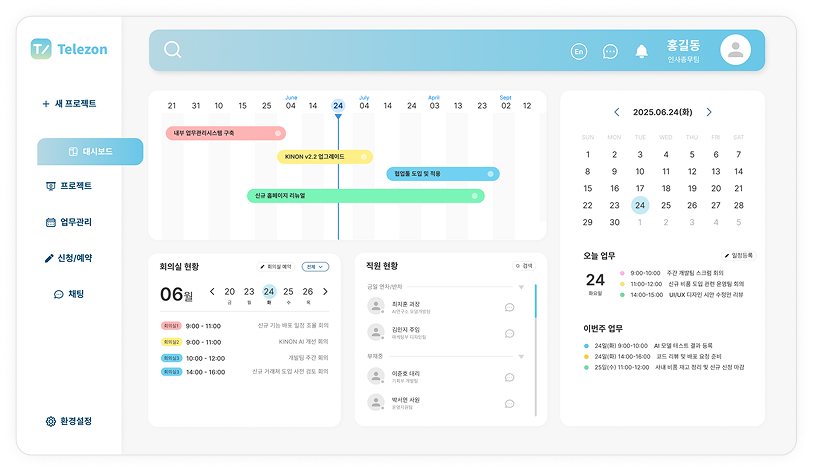
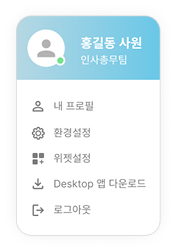
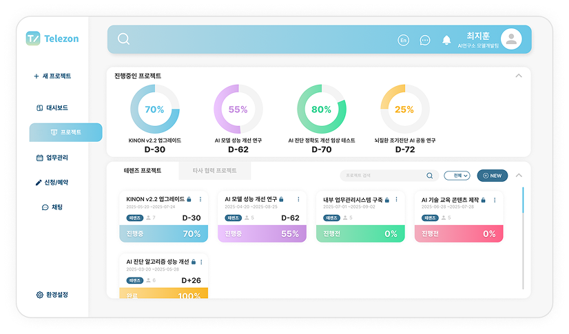
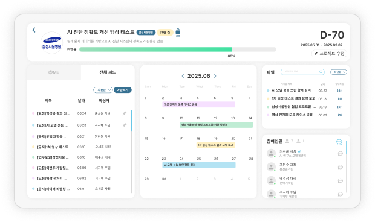

업무가 척척!
순조롭게 딱딱!
다양한 업무 진행 상황과 일정을 한 눈에 담아볼 수 있다면
업무가 훨씬 수월해지고 순조롭게 흘러간답니다.
Telezon은 넓은 렌즈를 통해 다양한 요소를 한 눈에 담듯이
복잡하게 얽혀 있는 프로젝트를 보기 쉽게 정리하고 회사 내의
여러 업무들을 간편하게 해결
할 수 있도록 도와주고 있습니다.
-
- 팀원들끼리 편하게 채팅을 주고받고 싶어요.
-
- 회의실 예약을 할 때마다 너무 번거로워요.
-
- 연차 신청 절차가 너무 복잡해요.
-
- 체계적으로 업무를 관리하기가 어려워요.
-
- 업무 진행이 전부 제각각이어서 효율이 너무 떨어져요.
-
- 다른 직원들의 진행 상황이 궁금해요.
-
- 중요한 프로젝트를 한눈에 정리해서 보고 싶어요.
dash board
한 눈에 담기는 대시보드


-
직관적인 디자인
핵심을 강조한 UI로 업무의 효율을 UP!
-
위젯 설정
내가 자주 보는 아이템만 쏙쏙 골라 업무 진행UP!
-
언어 설정
본인에게 편안한 언어 설정으로 업무 이해력UP!
-
핵심적인 정보를 일목요연하게!
기획 준비 중인 프로젝트와 진행 중인 프로젝트, 완료된 프로젝트 등
다양하고 복잡한 프로젝트 현황을 간단하고 확실하게보여드립니다.Telezon는 체계적인 프로젝트 관리와 함께 중요한 일정이나
공지사항을 놓치지 않도록 도와드리고 있습니다.
project
체계적으로 정리되는 프로젝트

